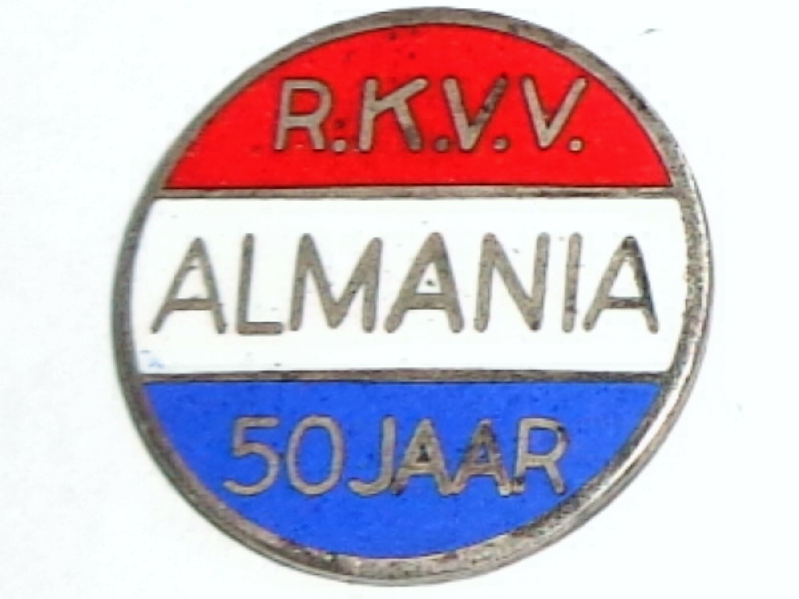
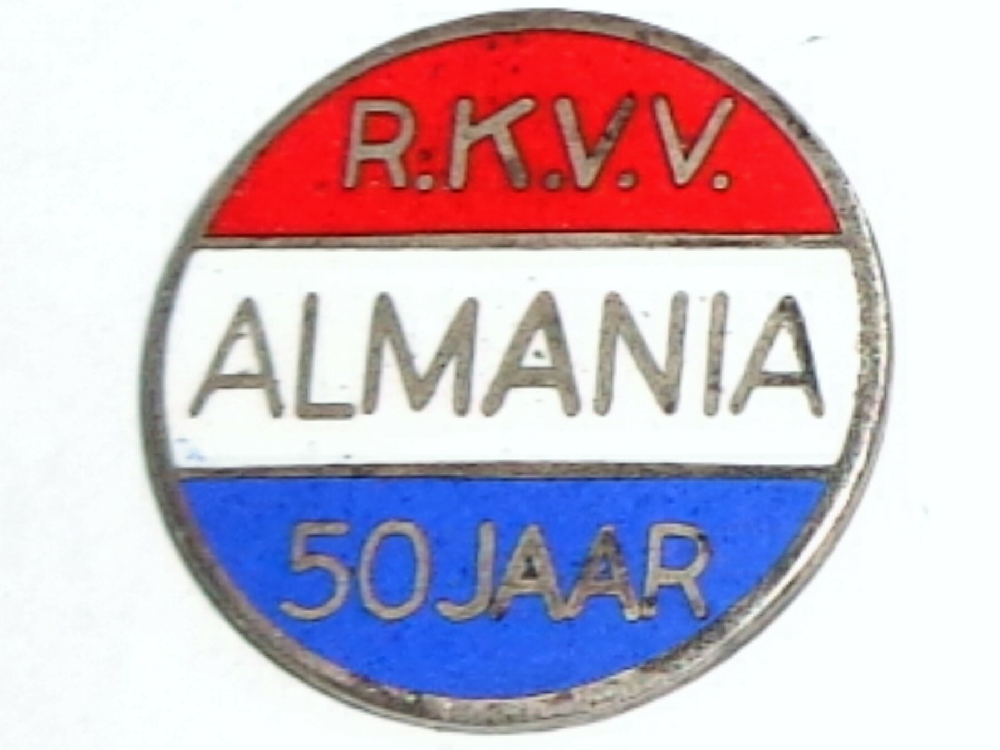

Hobby's
- Voetbal: Ik voetbalde toen ik klein was bij een aantal sportclubs zoals bijv : SSOC, Almania. En vanaf mijn 14e tot mijn 16e heb ik bij Sporting Sittard gespeeld. Daarna was ik gestopt en nu speel ik af en toe nog met mijn vrienden voetbal hier en daar.
- Trainen: Ik train 3x door de week bij Basic Fit en dit doe ik om fit te blijven, en dit vind ik ook gewoon leuk om te doen als een hobby.
 
